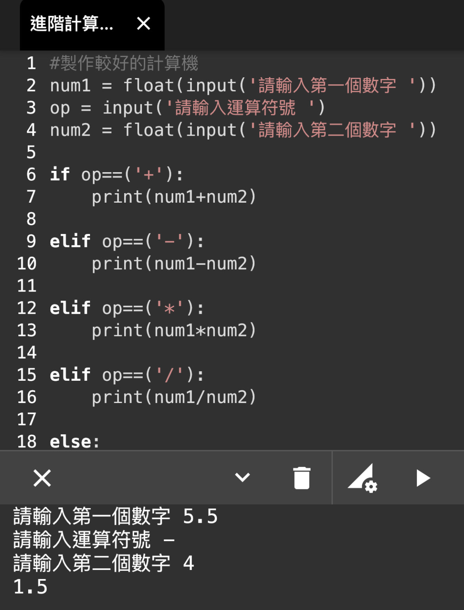
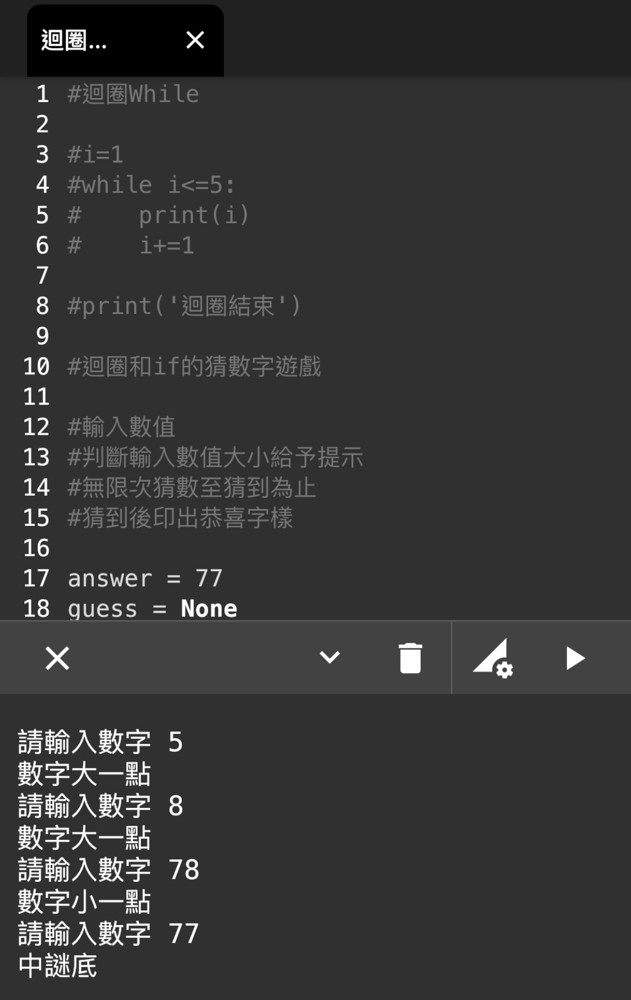
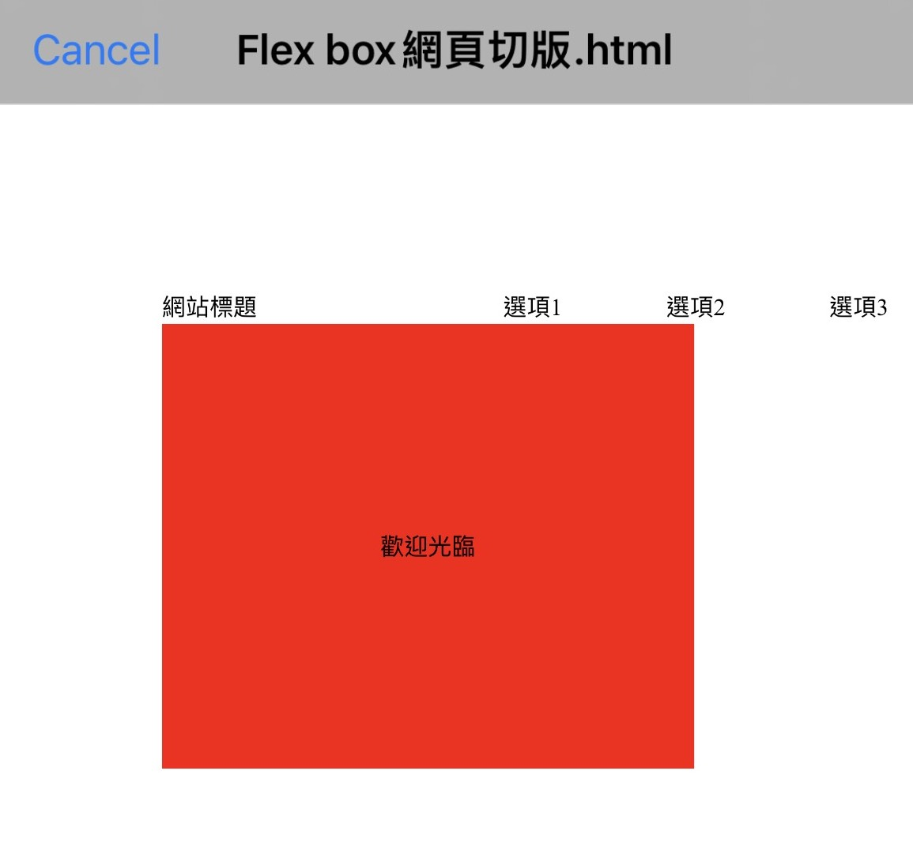
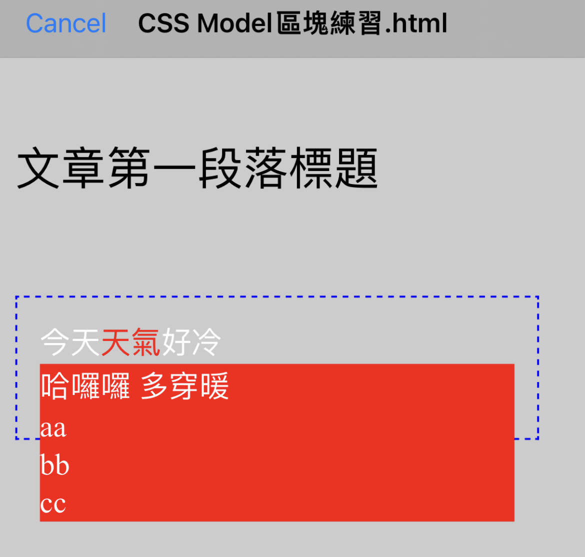
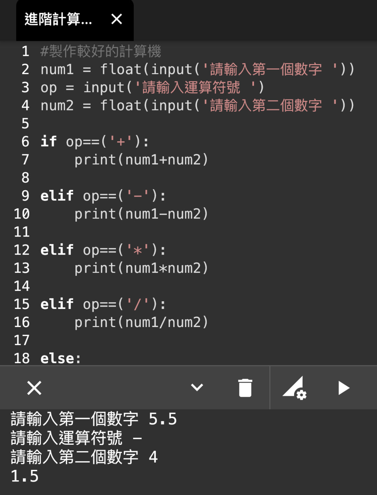
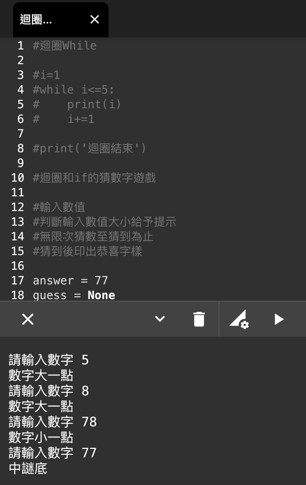
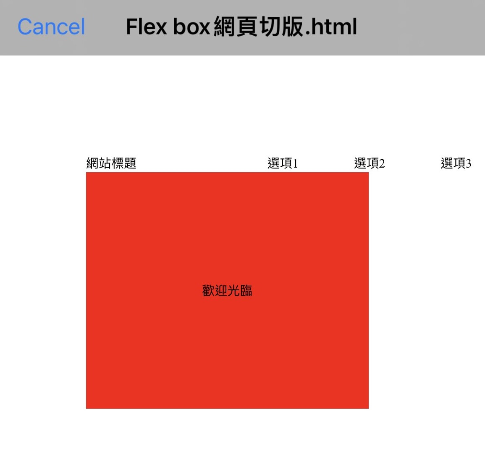
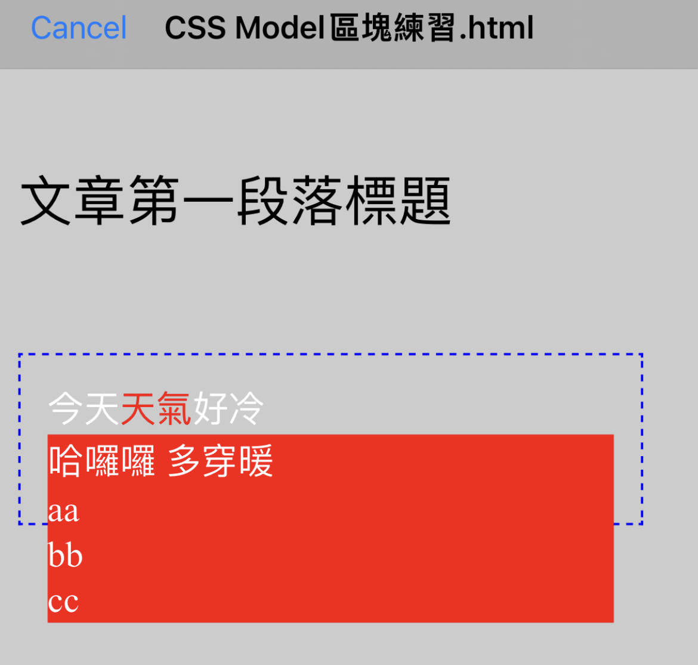
當時在擔任大夜班保全員時,在凌晨會用撰寫HTML的APP來模仿網路上的教學,借由模仿做出一點一滴的小效果, 雖然手機能發揮的功能有限,但從中也讓我發現程式語言無窮的有趣與發展性,當中自己也看了線上許多訓練營所做的轉職訪問跟其教學內容, 好讓自己能交叉比對出符合自己想要什麼與現今需求的程式語言。
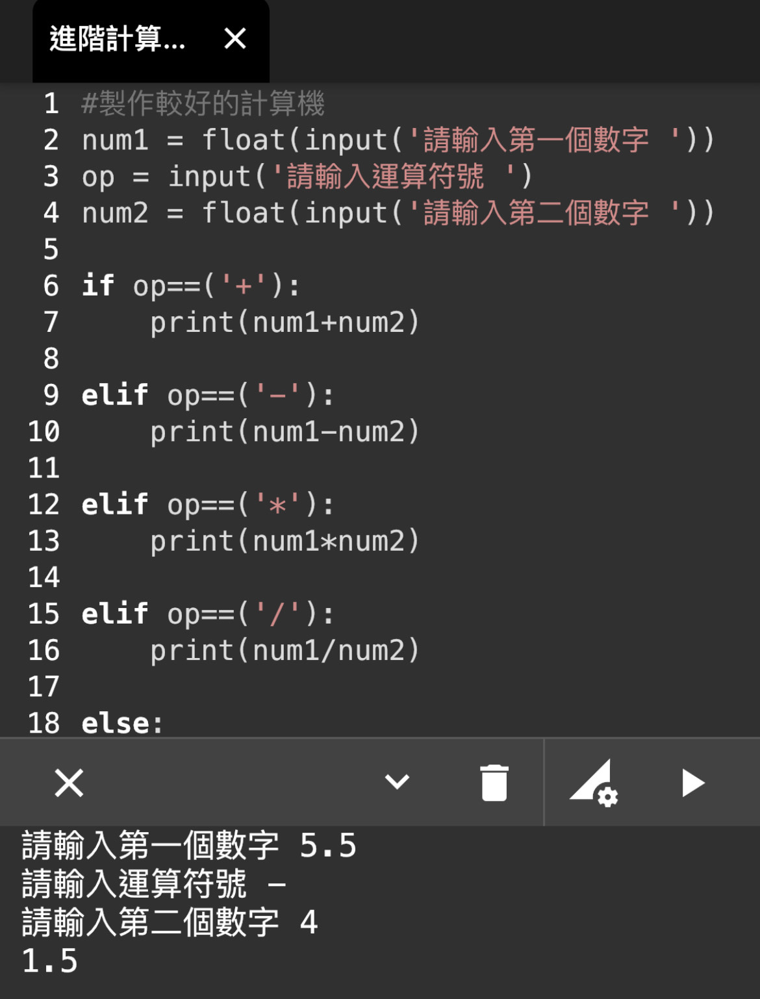
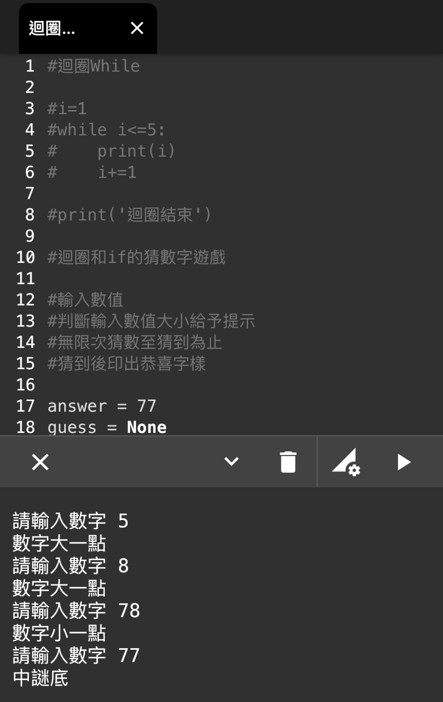
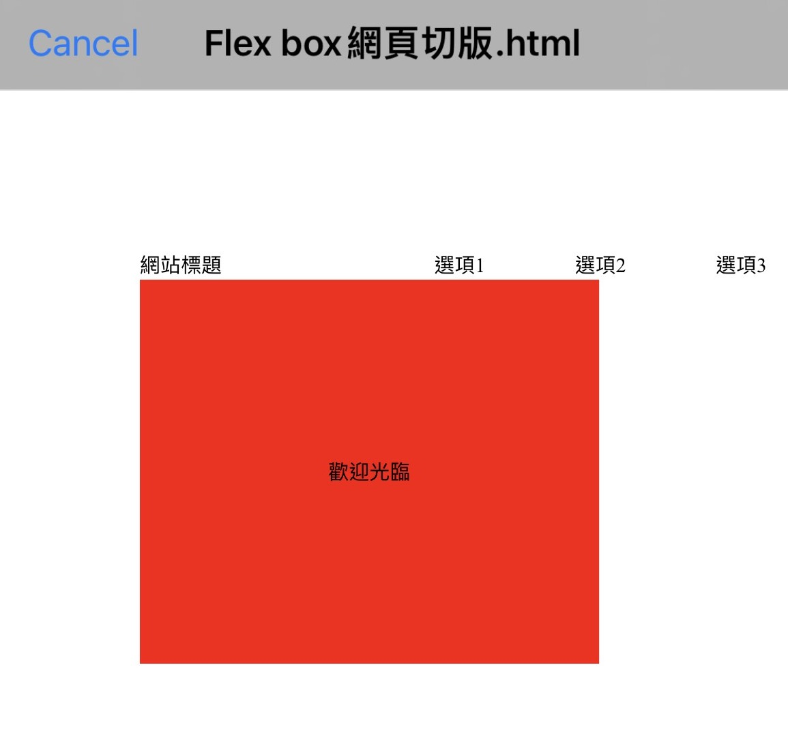
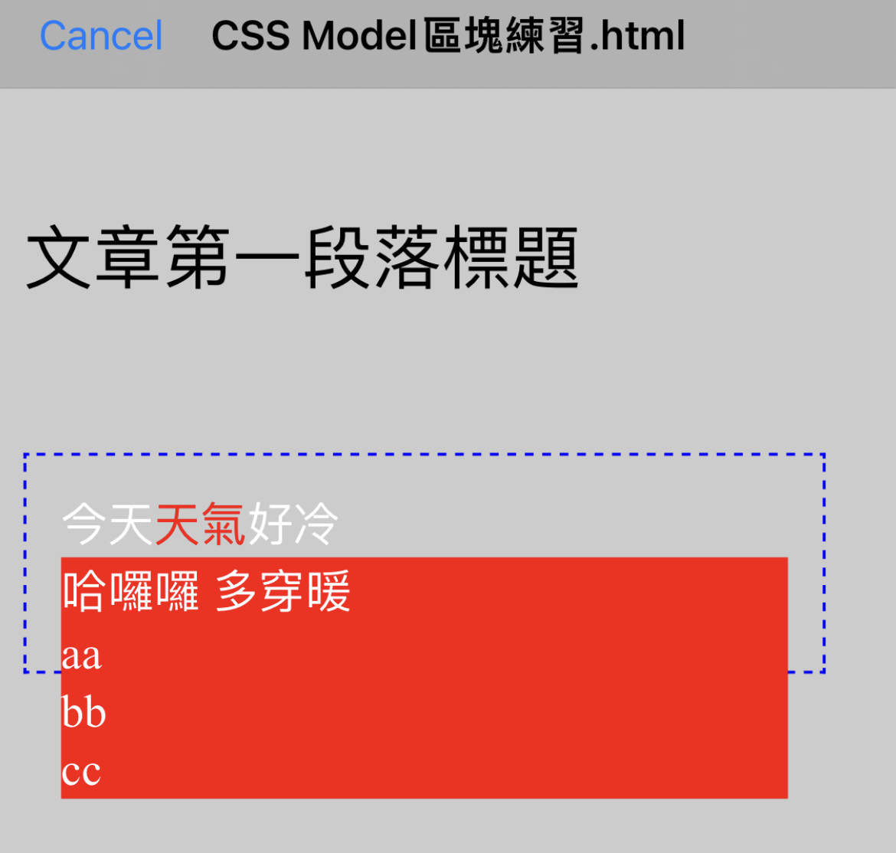
| 工作日 | 公休日 『週三、週日』 |
|---|---|
| 白天 07:00-14:00 | 白天 07:00-12:00 , 13:00-17:00 夜晚 18:00-00:00 |
在環保局清潔隊員之前,本來是要去做公車駕駛,但從以前就沒有碰過手排車,自己清楚自己手腳和反應也不大靈敏,
因為知道自己的不足,每天都會安排時間從台北到宜蘭考場去練習,而在練習過程中,有些場地會需要特殊角度才能駛入,
自己會先用自己的身體感覺,多掌握幾次後,若無法克服,也都會與同學互相交流,並綜合經驗後,透過一次一次實際練習掌握所有考試場地,成功考取大客車駕照！
光從文字的排版就有無數的變化去做搭配,
文字大小,顏色,字體,邊框到排列等許多細節要去調整,
慶幸網路上的教學影片有把基本觀念大概建立起來,配合W3Schools上範例的教學,
建立出自己想要的網頁,從中,體悟到Get your hand Dirty裡頭的一些態度出來,
在每次的試驗程式碼與探索中,都有自己預料與自己完全意想不到的效果出來,
並在其中讓自己稍加熟悉沈浸於程式碼建立的愉悅與成就當中。
謝謝彭彭老師在YT上方的教學影片,觀念易了解,且給我們相關語法的資源,方便能繼續深度學習！
您在平台上對於各種狀態的學習者的忠心建議與訓練營的收費及流程運作也都相當清楚明瞭！
大部分資源的無私提供，只能用一句話來聊表。
感謝您,謝謝您！